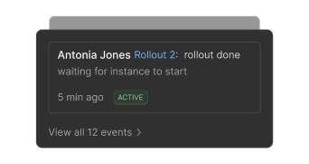
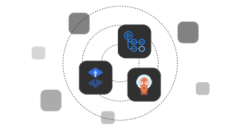

Don’t let the complexity of Kubernetes leak into your engineering team
Abstract Away K8s Primitives
Deploy, manage and debug applications with end-to-end ownership without experiencing bottlenecks or battling Kubernetes hurdles.
Proactively Troubleshoot
Identify availability issues, misconfigurations, lack of resources, K8s anomalies and failed deploys w. feedback and health checks.
Developer Tools
Robust tooling that encompass a CLI, an extensive developer-interfaces and cloud- native CI/CD integrations.
Developer-Friendly Kubernetes Abstractions
Deploy and scale applications without battling the intricacies of K8s and spending valuable time configuring low-level K8s resources repeatedly.
Autoscaler
Seamlessly enable vertical- and horizontal autoscaling with CPU- & Memory limits, number of replicas & avg. CPU utilisation Targets.
Network Interfaces
Manage Private and Public Network Interfaces and let Rig automatically handle the rest.Environment Variables
Automate configuring the low-level Kubernetes resources on both container and pod-level.Config Files
Our platform simplifies config files and their mounting. Don’t spend time changing low-level K8s resources.Flexible and scalable Deployment Engine
Deploy and manage any application on any cloud provider with Rig and Kubernetes. Rig enables developers to deploy well-configured applications in Kubernetes without the complexity.
Builds
Immutable deployments of a new services w. automatic configurations of resources.
Rollouts & Rollbacks
Deploy and update configurations with immutability and efficient Rollbacks. Integrations
Integrate seamlessly into existing cloud- native deployment stacks. Troubleshooting made simple
Deploy and manage any application on any cloud provider with Rig and Kubernetes. Rig enables developers to deploy well-configured applications in Kubernetes without.

Cluster insights
High-level access to cluster health, features and issues.Instancess
Instance status and dependencies in one aggregated view.Logging
Stream combined Capsule logs across instances, directly from the dashboard.
Health Checks
Easily configure Liveness and Ready probes for Capsules.A platform to benefit the entire team
- Product Teams
- DevOps/Platform Teams
- Engineering Leaders
Let developers independently deploy to K8 without any bottlenecks, steep K8 learning curves or unnecessary deployment stages.
Identify issues, misconfigurations, lack of resources, and failed deploys, and resolve with rollbacks.
Provide developers with a powerful platform that fits their workflows with a robust CLI and Dashboard.